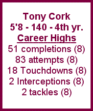
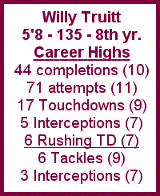
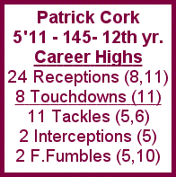
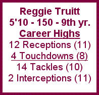
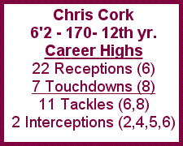
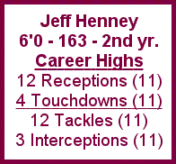
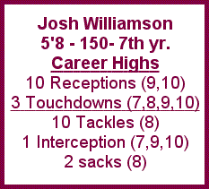
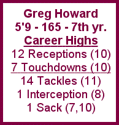
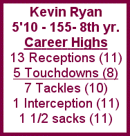
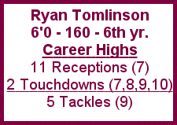

Tony
Cork Eager to Return to Action
Quarterback
Having spent
three years in the broadcast booth critiquing every single throw of each
quarterback, Tony Cork will throw caution to the wind and make his monumental
return to the field for Cork Bowl 12.
Following a record-setting game in Cork Bowl 8, Cork left the game
while on top, but now he returns for yet another season.
“I can play,” emphatically said Cork.
“I’ve wanted to play the last few years but couldn’t,
but I have no doubts that I can still play.”
Cork, at 55,
will be the oldest player to ever appear on the Corklestick field.
His last action came in Cork Bowl 8 nearly four years ago when he
completed a record 51 passes for 18 touchdowns in the Lemurs 142-126 win.
He was questioned before that game as well, but silenced the critics
with his performance. “We
have complete confidence in him to lead our team,” responded teammate
and son Patrick Cork. “He’s
shown in the past that he’s a highly accurate passer and he’s
not going to make mistakes to hurt the team.
I wouldn’t want anyone else leading us into this game.”
 Cork ranks
first all-time in completion percentage by connecting on 60% of his tosses.
He has only thrown 2 interceptions in 108 attempts for his career
– a miniscule 1.8%. He
has been very outspoken of other quarterbacks from his perch in the booth
and now must play huge to secure his spot in Cork Bowl history among the
top throwers of all-time. “He
hasn’t proven he can produce year in and year out,” replied opposing
QB Willy Truitt. “You
have to do that to be a great Cork Bowler.”
“After his criticisms of past QB’s, he better play well
or I’m gonna make it a very long day for him on the field,” answered
color commentator Kirby Newell.
Cork will surely
be blitzed heavily throughout the game, and is not the most mobile of quarterbacks.
“We’ve got to protect him and keep the pressure to a minimum,”
added Patrick. “Kevin
and Josh are going to have to slow down the Hartebeest rush and give him
time. If he has time to throw,
he’ll pick apart their secondary all day.”
He must move the chains and lead the Meerkats on long drives. With little threat of the deep ball, he’ll have
to use short, high percentage passes to be effective.
He should be helped in this area with the emergence of the "Old Coast
Offense" the Meerkats plan to feature. With his accuracy,
if the Meerkats are able to slow down the blitzes of the Hartebeests, Cork
could challenge his own completions record of 51 this year.
Defensively, Cork has been somewhat of a liability in the past totaling
only 2 tackles in his three games, but plans to be a bigger factor this
year. “I’m going
to guard Tomlinson this year and I’m going to shut him down,”
boasted Cork. If he’s
able to defend Tomlinson effectively like everyone else has in the past,
it could free up Kevin Ryan or Josh Williamson to provide some pressure
on the QB.
| FANTASY PROJECTION: |
54-for-81, 18 TD, 1 int. |
Back to Top |
2 tackles
|
|
Willy
Truitt Wants 4 In a Row
Quarterback
You've heard that statistics lie.
Well, in the case of Willy Truitt, the numbers simply speak for themselves.
Far and away the most accomplished quarterback Cork Bowl has ever seen,
Truitt is looking to continue his current hot streak. His 223 completions
are nearly 100 more than the next QB, and his 86 touchdowns nearly double
the amount of the 2nd best passer. Having won 3 straight Cork Bowls,
Truitt sees no reason why he can't make it four in a row. "We've
got virtually the same team we had last year, so there are no uncertainties
coming in," answered Truitt.
A model of consistency, you can go
ahead and mark down 40 more completions for Willy this year. Amazingly,
Truitt has had nearly identical numbers for the past 4 years (46-69; 35-62;
44-71; 41-77). Since throwing 5 interceptions in Cork Bowl 7, he has
not thrown more than 2 in a game since. He's averaged 15 1/2 TD's
per game since Cork Bowl as well. "He's definitely got the best
numbers. That's obvious," remarked Patrick Cork. "But
now he's winning games and leading his team."
Although Truitt had another solid
game last year, he struggled mightily in the first half going only 17 of
34 with 5 TD's and posted his lowest number of touchdowns in a game in five
years. "We played him better than we ever had before," remarked
Chris Cork. "Their defense won that game - not Willy Truitt."
In fact, Truitt only led his offense to 91 points in the game, while the
defense posted 23 points. Some attribute the slo ppy conditions to
the erratic play. "He's never been a bad-weather QB," added
Patrick. "That's really the only blemish on his career. He didn't play well in the rematch in '98 in the rain,
and he was all over the place early in the game last year. If it's
rainy or snowy, I like our chances a lot better than if it's nice weather."
"I think if we can keep him off
balance and surprise him with some pressure, we can get some turnovers or
force some quick throws," added Josh Williamson. "If we
can force a few punts and get some interceptions, we'll be in great shape
with our offense. We have to force him to make a mistake because he's not going
to make one on his own."
Defensively, Willy has played a lot
of safety the past few years, but has also matched up in man-to-man frequently.
He has picked off 6 passes in 7 games, and could see himself guarding Kevin
Ryan most of the game. The last time Truitt matched up on Ryan he
picked off 2 passes in Cork Bowl 10. If Greg Howard decides to bring
pressure, Willy and Ryan Tomlinson must pick up Williamson and Kevin Ryan
in coverage. They must play tight man-to-man because if Greg rushes,
there will be no help for the corners covering Chris and Patrick.
Having Williamson or Ryan running free across the middle all game could
be disastrous for the Hartebeests.
| FANTASY PROJECTION: |
44-73, 16 TD, 3 int. |
Back to Top |
6 tackles
|
|
Patrick
Cork Looking for Redemption
Wide Receiver
When you set
a record for receptions and touchdowns in a game, and hold the opposing
receiver to just 4 catches in 100 minutes of play, it’s hard to find
room for improvement, but Patrick Cork sees one big problem with last year’s
game. “We didn’t
win,” answered Cork Bowl’s all-time leading receiver. “When it comes down to it, you have to win.
Plain and simple. Losing is unacceptable.”
In what was one
of the best individual efforts in Cork Bowl’s storied history, Patrick
fought off double coverage all game and caught a record-tying 24 passes
for a record 8 touchdowns. He also held Greg Howard to just 4 receptions for the
game. However, the individual
numbers didn’t lead to victory.
“Like I said last year,” added Cork.
“It doesn’t matter what you do if your team loses.
I’d trade all those catches in to have another ring in a heartbeat.”
 Patrick has averaged
an amazing 20 receptions a game over the past four years, including two
games with 24 catches. “I
love throwing to him,” replied Tony Cork.
“He never drops anything and he has a knack for getting open.
He’s got one of the surest set of hands I’ve ever seen.” Cork has four of the top 6 receiving games of all-time,
but he is on his 3rd quarterback in as many years. However, he thinks his chances of adding another championship
to his resume are very good. “With
Coach back at QB, we have a great chance to score a lot of points,”
remarked Patrick. “He,
Chris and I are always on the same page, so there will be fewer mistakes
than last year. The 3-headed
Cork Monster promises to be a powerful force once again.
Having won 3 straight times before last year, you forget what it
feels like to lose. Now I remember
and don’t want to feel that way again.”
Patrick will have a solid group of receivers with him, including
a pair of tight ends – Kevin Ryan and Josh Williamson.
“They are crucial to our success on offense,” claimed Patrick.
“If they can produce, it will take a lot of the pressure off
of Chris and me.”
Defensively,
Patrick had his worst game statistically last year finishing with just one
tackle, but did what he intended to do.
“I wanted to take Greg completely out of their game plan,”
added Cork. “And I did.
It’s hard to get tackles when your guy never catches the ball.”
Howard was held to just 4 receptions in the game – all short
touchdown grabs. “Although
I took one of their offensive threats out of the game, I wasn’t able
to force any turnovers like I had in the past.
That’s a big part of my defense is stripping the ball away and
picking off passes. We can’t
expect to hold them on downs every drive.”
Cork will likely return to guarding Reggie Truitt this year and hopes
to have similar success in minimizing his production.
When it comes down to it, Patrick must continue to be the go-to-guy
on offense and be the recipient of the bulk of the Meerkat passes if they
want to win.
| FANTASY PROJECTION: |
19 receptions,
6 TD |
Back to Top |
8 tackles, 1 forced fumble
|
|
Reggie
Truitt's Time to Shine
Wide Receiver
If you scan the career stats, only
one name appears in the top 5 in all offensive categories and that name
is Reggie Truitt. Arguably the most diverse player in the game, Truitt
has completed 135 passes and caught 42 more. He's the all-time leader
in tackles and ranks third in interceptions. However, there is one
thing that has always been questioned and that is whether or not he can
be a team leader. "Last year he boasted that since Kirby had
retired it was his time to shine," remarked Patrick Cork. "But
he didn't step up and lead his team - a rookie did. He played a good game,
no doubt, but if he wants to
go from good to great, he has to have a dominate game."
In his first full game at receiver
since Cork Bowl 8, Truitt caught 12 passes but only found the endzone one
time.  In fact, Truitt has only 11 touchdowns altogether, ranking him
7th on the all-time list, just barely ahead of Ryan Tomlinson. "You've
got to have desire to score touchdowns in Cork Bowl," remarked Kirby
Newell. "Reggie's desire has been a question mark for a number
of years."
He definitely has the quickness to
find open spots in the secondary, and he's faster than either Chris or Patrick
so he can create a number of matchup problems . However, Truitt hasn't
been able to be create havoc consistently throughout the game. "He's got
good hands and he's very quick, but he still hasn't had that one game that
stands out in your mind," added Patrick. "There's no doubt
that Reggie has to be the man," remarked Willy Truitt. "I
have to be able to look his way when I need a big play. He's just
now getting re-adjusted to the receiver role after QB'ing for a while, so
I think this year will be his best."
Defensively, Truitt played one of
his better games statistically finishing with 11 tackles and 2 interceptions
last year, however he was also the defender on the majority of Patrick Cork's
24 receptions. "He's never been able to handle Patrick,"
snapped Chris Cork. "I mean he played cornerback for the mighty
Maroons in the glory days of the mid '90's, yet he can't lockdown a cross
country runner? He had to have been better back then. If not,
it really makes you worry about the state of RHS football..."
Not only does Reggie get things done on
the field, but he has been responsible
for most of the defensive game-planning over the past 3 seasons, including
last year's Bandicoot defense that surrendered just 98 points. As
always, he will be a main component of the Hartebeest offense and defense.
In his second consecutive year as a full-time receiver for brother Willy,
expect Reggie to put up his best numbers yet. He must step up and
be the go-to receiver. "You have to be the guy that demands the
ball in crunch time if you're gonna be a star," added Newell.
"As long as Reggie has been a part of Cork Bowl, he is due
to have a huge game."
| FANTASY PROJECTION: |
14 receptions, 4 TD |
Back to Top |
11 tackles, 1 interception
|
|
Will
Chris Cork Ever Rebound?
Wide Receiver
Just four years
ago he was the most feared receiver in Cork Bowl.
But coming into Cork Bowl 12, Chris Cork is almost an afterthought.
“Anyone who overlooks Chris is crazy,” snapped brother
and fellow Meerkat receiver Patrick Cork.
“I hope the Hartebeests do overlook him because he’s still
capable of catching 15 passes in a game – at least.”
Having averaged
17 receptions a game from Cork Bowl 6 through 8, including a then-record
22 grabs in Cork Bowl 6, Cork has failed to reach double digits for each
of the past three years including a career low 7 receptions last December.
Is he on the downside of a brilliant career?
“I’m older, slower, weaker, more out of shape…..and
I’m STILL always open,” boasted Cork.
“I didn’t go out on many patterns last year because I had
to help out our pathetic offensive line, but you can expect me to be hauling
in  passes regularly again this year.”
”Chris has
always been a team player,” added Patrick.
“Last year he spent probably 70% of the game blocking so there’s
no way he could have put up good numbers.
Once we finally started sending him out, he caught about 4 or 5 passes
in the 4th quarter alone.
He may never catch 22 passes in a game again, but I also don’t
think you’ll see another game in the single digits.”
Cork’s height
and long arms have played a huge factor down near the goal line, and earned
him the nickname: King of the Red Zone.
With Tony Cork back behind center, look for Chris to be the go-go-guy
when the Meerkats approach the endzone.
In Cork Bowl 8, Tony Cork’s last action, Chris caught a career-high
7 touchdown passes. “I
definitely look for him down there,” responded Tony Cork.
“He’s got great hands and I’d be silly not to try
to find the big fella when we need a score.”
Although Jeff
Henney won the MVP last year, it wasn’t because of his offensive production.
Chris played well on Henney all game allowing 12 catches and 4 touchdowns
– the lowest offensive output for any MVP.
He added 10 tackles and yet another interception, so for those who
see him fading on offense, his defense is still excellent.
His 12 interceptions are easily the most of any Cork Bowler and he
has picked off a pass in 3 consecutive games and 5 of the past 6.
“He’ll get another this year too,” added Patrick.
“He’s too good not to.”
Expect a return to form on offense with 10-15 catches and another
solid effort on defense. He
must contain Henney and not allow the big play on “D” to allow
the Meerkats to hang with the Hartebeests.
| FANTASY PROJECTION: |
12 receptions,
5 TD |
Back to Top |
10 tackles, 1 interception
|
|
Henney
Not Satisfied
Wide Receiver
For weeks leading up to Cork Bowl
11, everyone was wondering: What's the skinny on Jeff Henney?
When the game was over, the "skinny on Henney" was that he was
the MVP of the game as a rookie. Henney came up huge for his team
and surprised the entire league, including himself with his success.
"To accomplish my dream of winning a championship AND being named MVP
was something I thought was beyond consideration," said Henney following
Cork Bowl 11. "I'd be lying if I told you I didn't want to do
it again this year though."
Expectations will be much higher than
they were last year for Henney, so it remains to be seen how he will handle
being his team's leader. His 12 catch, 3 interception game was the
best rookie performance since Josh Yargus in Cork Bo wl 7 (Yargus hauled
in 17 passes and also returned 3 interceptions for touchdowns). "I
knew that he'd be a much bigger factor than most people thought," replied
Patrick Cork. "But I don't think any of us were expecting him
to make that many big plays. He was just in the right place at the
right time, and took advantage of our mental mistakes." Henney
will be surrounded by virtually the same team as a year ago with only one
roster change (Tomlinson), and he hopes for similar results.
Henney wasn't tested much on defense
last year due to the high amount of blitzes the Bandicoots ran, but will
surely find himself one-on-one with Chris Cork this year. He did well
against Chris last year when challenged, and will have to limit Chris's
catches this year as the Meerkats will be looking for a more balanced offensive
attack. "Chris is one of the legends of the game," added
Henney. "I look at matching up with him as an honor as well as
a challenge."
Henney snuck his way onto the scene
last December, but there will be no surprises this year. He became
a favorite target of Willy Truitt as the game went on, and with an entire
year to get comfortable with each other, it will only help the Hartebeest
offense this year. Henney was more of a possession receiver as a rookie,
but look for him to try to make some plays farther down the field and stretch
the coverage of Chris Cork. He will have to produce another good game
offensively with double digit receptions, and needs to be able to shadow
Chris all over the field on defense. If Henney can neutralize Chris,
there will be a lot of pressure on Tony Cork to find another go-to receiver
to go along with Patrick.
| FANTASY PROJECTION: |
12 receptions, 5 TD |
Back to Top |
9 tackles, 1 interception
|
|
Williamson
Returns After One-Year Absence
Tight End
For the first
time in six years, Cork Bowl was without Josh Williamson last year.
“We missed him a ton,” remarked Commissioner Patrick Cork.
“He has a certain energy about him that raises the level of
play for everyone. Plus he’s
awesome in pregame shows!” Williamson
missed last year’s contest due to a college internship program, but
will return to the field ready to play.
Williamson was
absent for the first time since his debut in Cork Bowl 5.
Always a defensive force, he had begun to put together a string of
very good offensive performances before his absence last year.
After totaling only 18 catches in his first four seasons, Williamson
hauled in 10 passes each in Cork Bowl 9 and 10, and proved to be much more
sure-handed than in previous seasons.
“I’m a defense-first kind of guy – no doubt,”
remarked Williamson. “But
I’ve learned that if you don’t produce on offense as well, you’re
not going to win games. No
great Cork Bowl player has ever been one-dimensional.”
 Still, Williamson
thrives on the defensive side of the ball.
The all-time sacks leader with three, he has been hounding opposing
quarterbacks for the past 4 seasons.
He’ll probably find himself matched up man-to-man on Greg Howard
this year who will be looking to rebound from a sub-par offensive game last
year. But that’s fine
with Williamson. “I don’t
care who I guard,” he responded.
“Just put me on the field and let me play.”
“He attacks on defense as well as anyone in the game,”
remarked Ryan Tomlinson. “He
flies to the ball and is as sure a tackler as there is.
He doesn’t just tackle people – he punishes them.”
Williamson will
likely be an integral part of protecting Tony Cork as well.
“We’ve got to give him time to throw,” added Williamson.
“It’s going to be up to me and Kevin to provide the protection
so he can find Chris and Patrick downfield.
I’ll get my catches, but I’ve got to keep Coach healthy
first.” Williamson must
give Tony Cork time by blocking Greg Howard when he blitzes.
If Howard is able to pressure Cork and force him into making quick
throws, the Meerkats will have little hope of winning the game.
If they are able to protect him in the pocket, the Meerkat receivers
should put up huge numbers and Williamson should be the recipient of double-digit
passes yet again. If Williamson can prove to be a sure-handed outlet receiver,
he could wreak havoc underneath. “If
Greg blitzes, either Willy or Tomlinson will have to pick me up in pass
coverage,” added Williamson.
“If that’s the case, the Hartebeests may get tired of seeing
the back of my jersey as they chase me downfield.”
| FANTASY PROJECTION: |
11 receptions,
3 TD |
Back to Top |
10 tackles, 1 sack
|
|
Greg
Howard Seeking Defensive Dominance
Wide Receiver
Despite the high point totals and
impressive offensive statistics put up in Cork Bowls, defense still plays
a key factor in each year's outcome. Last year's game showed that
more than any other as the Bandicoots hounded the Ermine for four quarters
of play. Most of that pressure was provided courtesy of Greg Howard.
Howard had a career-high 14 tackles
in the game, and although he didn't record a sack, he disrupted things in
the backfield throughout the game. "It seemed like every play
he was in our backfield," replied new teammate Ryan Tomlinson.
"Our offense just spun its wheels all game."
"Defense wins championships,"
remarked Howard. "Fans love the offensive nature of this game,
but when you get down to it, the team that's able to stop their opponent
wins. With only one player rushing the quarterback, I find it only
fitting that I be assigned to that duty. Just because Coach Cork is
87 years old doesn't mean I will take it easy on him either."
Howard had his worst offensive performance
since his rookie season last year, hauling in only 4 passes - although all
were for short touchdowns. "I haven't focused as much on off ense
as I used to," added Howard. "Don't get me wrong - I still plan on being a force on offense, but my main energy will be on the
other
side of the ball. If you're a Meerkat you're going down - plain and
simple."
"We can't allow Greg into our
backfield," remarked Kevin Ryan. "It's up to me and Williamson
to protect Coach and give him time to find the open man. All he needs
is a few seconds and he'll be fine."
Howard will most likely need to catch
more than 4 passes this year if the Hartebeests are going to win Cork Bowl
12. Having been hounded last year by Patrick Cork, he should be able
to create more offense this year with a smaller Josh Williamson providing
coverage. If he can pull in 10 passes and continue to provide
the defensive pressure he is becoming known for, the Meerkats could be in
for a long day. Howard's knack for finding the endzone will be important
when the Hartebeests approach the goal line. Over the past three years, Howard
has caught 25 passes with 17 going for scores. "He seems to be Willy's
favorite target near the goal line," added Chris Cork. Undoubtedly the fittest player in the game, Howard's
endurance has played a major role late in games allowing him to put up great
numbers in the 4th quarter, and he will surely be a factor late in the game
this year as well.
| FANTASY PROJECTION: |
12 receptions, 5 TD |
Back to Top |
10 tackles, 1 sack
|
|
Kevin
Ryan Finds His Niche
Tight End
After five years
of experiments and advanced game-planning, Kevin Ryan finally broke through
in Cork Bowl 11. The answer: Get
him the ball in space and let him go. Either that or have Tomlinson try
to guard him…Ryan had rotated from receiver to quarterback for each
of the last two years, and never found consistent offensive production.
Although his passing numbers were solid (36-for-68 with 15 touchdowns
and just 3 interceptions), he never felt completely comfortable throwing
the ball downfield. His receiving was solid (41 receptions in 6 games), but
never quite what he wanted. That
is, until last year. Ryan exploded
in Cork Bowl 11 with a career high, and team-leading, 13 receptions and
4 touchdowns – including a phenomenal 4th quarter that consisted
of 6 catches and 3 touchdowns. “He completely dominated us in the second half,”
replied current teammate Patrick Cork. “We
had no answer for him. I’m
glad he’s on our side this year.
Hopefully he can build on what he accomplished last December.”
Ryan was a bruiser
for much of his career, but has shed the extra pounds and is much quicker
than in previous years. “I’ve
really focused my training on getting faster without losing my strength
and power,” answered Ryan. “Now
I don’t have to run over people, I can run around them too.”
The leaner look has proven effective as much on defense as anything
else. Ryan recorded his first
interception last year and added 1 ½ sacks and an interception as
well.
Ryan will be
a part of history this year as he joins Josh Williamson in the two tight
end set the Meerkats will feature as part of the "Old Coast Offense".
It is the first time a team has gone with two tight ends on offense.
“Having two tight ends, our offense isn’t going to be explosive,
but it is highly effective,” added Ryan.
“With Coach at QB, we're not going to be looking for
a lot of homerun balls down the field.
We have to make catches and do something after the catch.
Having two tight ends is great because we can work the middle of
the field and really open things up for Chris and Patrick outside.”
As a tight end, Ryan will also have to help Williamson slow down
any Hartebeest blitzes. “Josh
and I will take care of their rush,” replied Ryan.
“You don’t have to worry about that.
Coach will have all the time he needs to find the open man.”
With the Cork
brothers covering Henney and Reggie Truitt, and Tony Cork taking Tomlinson,
Ryan will likely find himself playing a lot of safety or rushing the passer.
He’ll need to roam the middle of the field making tackles and
breaking up passes. He will
be instrumental in the ball control offense of the Meerkats with his blocking
as well as his receiving. Dropped
passes must be at a minimum. If
Tony Cork gets protection, expect another solid game for Kevin in the low
double-digits in catches.
| FANTASY PROJECTION: |
12 receptions,
4 TD |
Back to Top |
6 tackles |
|
Tomlinson:
A Rookie Fluke?
Wide Receiver
Five years ago Cork Bowl thought they
yet another rising star. His 11 catch, 2 touchdown performance helped
lead the Rovers to victory in Cork Bowl 7, however since that game, people
are wondering: Where have you gone Ryan Tomlinson? Since his rookie
year, Tomlinson has averaged less than 5 catches a game and was picked apart
by Kevin Ryan on defense last year. "I don't care what people
say about me," replied Tomlinson. "I'm still a factor in
the passing game. I plan on returning to my rookie form this year."
That last comment is beginning to sound like a broken record, and many around
Cork Bowl are wondering if Tomlinson will ever show the promise he showed
5 years ago.
Tomlinson's longevity has allowed
him to move into 8th place on the all-time receptions list, and he's actually
been rather sure-handed the last couple of years. "He's not been
bad," commented Patrick Cork. "But he hasn't been a factor
either. You have to provide some sort of threat to the defense or
they won't pay attention to you. Eventually even your quarterback
loses confidence in you as well." 
One thing that could be a positive
sign for Tomlinson this year is the reported defensive approach of the Meerkats.
The 'Kats are supposedly looking at having Tony Cork match up on Tomlinson,
so if he were ever going to step up and silence the critics, now would be
the time. "If he can't get open with an 80 year old man covering
him, he shouldn't be playing in Cork Bowl," snapped Kirby Newell.
"If he doesn't have a huge game with Coach on him, he'll never have
the respect of the other players...not that he does now anyway, but..."
Defensively, Tomlinson was abused
by Kevin Ryan last year. Whether it was because of his forthcoming
nose-job, or a sprained knee he claims to have suffered in the 3rd quarter,
he simply provided too many wide open looks as the game went on. If
the Hartebeests plan on blitzing with Greg Howard, Tomlinson will again
find himself on Kevin. "Last year is in the past," added
Tomlinson. He better have a short memory because if Kevin gets the
opportunities he had last year, it could spell disaster with the Meerkats'
"Old Coast Offense". "I'd be lying if I told you we
won't be looking for ways to attack him," replied Patrick Cork.
"If we can get Josh or Kevin one-on-one in the open field on Tomlinson,
our offensive plan will be a success."
The only question mark on an otherwise
rock-solid team, Tomlinson has to provide some sort of production either
on offense or defense. If he doesn't catch many passes, and he can't
cover any Meerkat receivers, the Hartebeests will be playing short-handed
all game and may have to scramble offensively and defensively. An
ineffective Tomlinson could eliminate the Hartebeets pass-rushing plan as
well. "Whichever team scores the most points is going to win...probably,"
added R.T.
| FANTASY PROJECTION: |
7 receptions, 2 TD |
Back to Top |
2 tackles
|
|
Back to Cork Bowl Main Page |